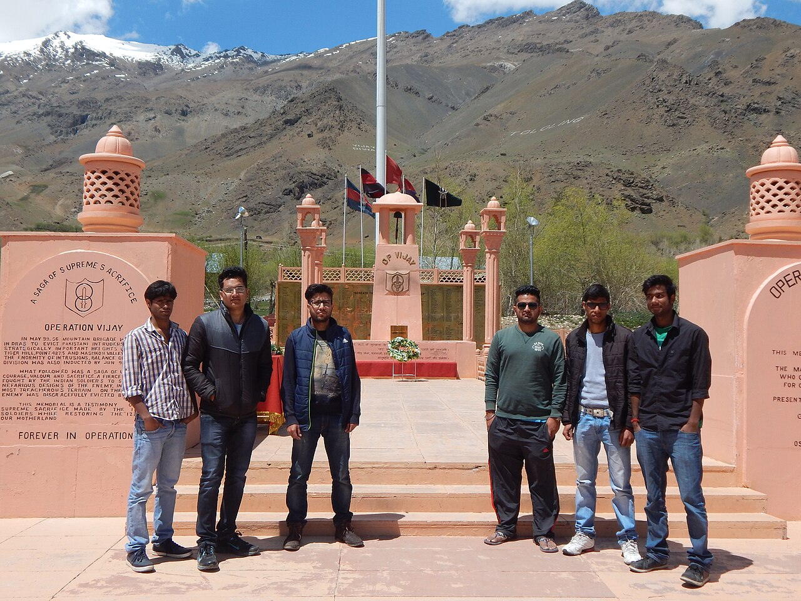

History · Operation Vijay
Remembering Kargil: Operation Vijay and the Heroes of 1999

Every year on 26 July, India observes Kargil Vijay Diwas — Kargil Victory Day. It marks the morning in 1999 when the last intruder had been pushed back across the Line of Control and the highest, coldest battlefield in the world fell silent again.[1] The victory has a date. The cost does not end on any calendar.
The Kargil War was fought from 3 May to 26 July 1999 in the Kargil district of Ladakh, then part of Jammu and Kashmir, roughly two hundred kilometres from Srinagar.[1] India called its response Operation Vijay — "Victory." But the name was a hope before it was a fact, and the distance between the two was paid for in the lives of more than five hundred soldiers.
They did not fight for the height of the mountain. They fought for the country at its foot.
How it began
In the spring of 1999, Indian shepherds and patrols discovered that intruders — Pakistani soldiers and militants — had crossed the Line of Control during the winter and occupied unmanned posts on the Indian side, seizing the dominating heights above the Srinagar–Leh highway.[1] Whoever held those ridges could shell the road that supplied Ladakh. The intrusion was not a skirmish; it was a knife held to a vital artery.
India's task was almost cruel in its simplicity: climb up and take the peaks back. Soldiers would have to attack uphill, in thin air above 4,000 metres, against a dug-in enemy holding the high ground — among the most punishing conditions any army has ever been asked to fight in.
War in the sky: Operation Safed Sagar
To support the ground assault, the Indian Air Force launched Operation Safed Sagar ("White Sea") — widely described as the first time air power was used in sustained combat at such extreme altitudes, with targets sitting between roughly 1,800 and 5,500 metres.[1] Thin air robbed aircraft of lift and weapons of accuracy; pilots had to rewrite their tactics in real time. It was a high-altitude air war the world had never quite seen before.
The battles for the peaks
The war was decided ridge by ridge, in a series of assaults whose names are now etched into the army's history:
- Tololing — one of the first and bloodiest objectives, secured by mid-June after weeks of attritional fighting that broke the back of the intrusion.[1]
- Point 5140 and Point 4875 — the high features above Dras and Mushkoh, where the 13 Jammu & Kashmir Rifles earned undying fame, and where Captain Vikram Batra was killed leading the final assault on Point 4875, later named "Batra Top" in his memory.[1]
- Tiger Hill — perhaps the most iconic objective of the war, a sheer, commanding feature recaptured in early July after a daring, multi-pronged climb-and-assault.[1]
These were not battles of grand manoeuvre. They were close, vertical, and personal — grenade by grenade, foothold by foothold, often at night, often hand to hand.
The restraint that defined the war
Kargil was fought in the long shadow of a dangerous new reality: only the previous year, in May 1998, both India and Pakistan had carried out nuclear tests, announcing themselves to the world as nuclear-armed states.[1] Months before the intrusion, the two countries had signed the Lahore Declaration, a fragile promise of peace. The discovery of soldiers entrenched on Indian heights shattered that promise — and raised the stakes of any response to a terrifying height of their own.
India made a decision that shaped the entire character of the war: its forces would not cross the Line of Control, no matter the military cost of fighting uphill.[1] Soldiers were ordered to evict the intruders strictly on the Indian side, denying themselves the easier flanking routes that lay across the line. That self-imposed restraint won India crucial international goodwill and isolated Pakistan diplomatically — but it was paid for in blood by the infantrymen who had to assault fortified peaks head-on. It is one thing to admire strategic patience from a map room; it is another to climb a bullet-swept ridge because your country chose the harder, more honourable path.

The cost
By the war's official accounting, 527 Indian soldiers were killed and over 1,300 wounded in eighty-five days of fighting.[1] Many were in their twenties. Some were teenagers. The youngest officers led from the front and died there — which is why a disproportionate number of Kargil's fallen were lieutenants and captains, the men who turned and said follow me on a slope swept by machine-gun fire.
It is here that statistics fail and only names will do. Four soldiers were awarded the Param Vir Chakra, the nation's highest gallantry award, for Kargil. Hundreds of others earned decorations the public will never read. Each one represents a family that received a folded flag instead of a son.
Kargil was also, in a sense, the first war modern India truly watched. Television crews reached the forward areas, and for the first time the country saw the conflict unfold on its screens — the shelling, the stretchers, and above all the coffins draped in the tricolour returning to towns and villages across the nation.[2] A war that was being fought on remote, unpronounceable peaks suddenly had a face in every living room. That intimacy changed something. The fallen of Kargil were not distant names in a gazette; they were young men whose funerals the whole country attended, if only through a screen, and whose families became, for a season, the nation's own.

Vijay Diwas and the memorial at Drass
At Drass, in the shadow of the Tololing ridge, stands the Kargil War Memorial, where the names of the fallen are inscribed on a wall of sandstone the colour of the surrounding hills. Every 26 July, soldiers and families gather there to remember.[2] It is a long way from Delhi, hard to reach and brutally cold for much of the year — which feels right. To honour what happened at Kargil, you should have to climb a little.
Why I keep returning to Kargil
One of the poems in my collection Guardians in the Gale, titled "Undying Flames," is my own small attempt to stand at that wall in Drass and say something true. I wrote it for the spirit of Operation Vijay — for the idea that a flame lit by sacrifice does not go out when the fighting stops.
We tend to remember wars as maps and arrows, gains and losses. But Kargil, more than most, resists that flattening. It was fought by individual people doing individually impossible things, in a place so high that simply breathing was a battle. On 26 July, the least we can do is to remember not the victory in the abstract, but the climbers — the ones who went up the mountain so the rest of us could stay safely at its foot.
I think often of the average age of those who fell — boys barely older than I am now, who will never grow into the men they were becoming. They did not leave behind long lives or great fortunes. They left behind a country, intact, and the example of what it looks like to keep a promise at any cost. Every time I write about a soldier, I am really writing about that: not the politics of a war, but the quiet, terrible courage of an ordinary person who decided that something mattered more than their own survival. Kargil gave us five hundred and twenty-seven such people in a single summer. The mountains remember them. We should too.
Sources & further reading
- "Kargil War," Wikipedia — dates, Operation Vijay and Operation Safed Sagar, key battles (Tololing, Tiger Hill, Point 4875), and official casualty figures (527 killed, 1,363 wounded).
- Indian Army & Ministry of Defence records on the Kargil War Memorial, Drass, and Kargil Vijay Diwas — indianarmy.nic.in and pib.gov.in.
- Gallantry Awards portal, Government of India — Kargil recipients of the Param Vir Chakra, gallantryawards.gov.in.
Image credit. "Kargil War Memorial Sculpture at Drass" by PhotoholicAbhishek, licensed under CC BY-SA 4.0, via Wikimedia Commons.